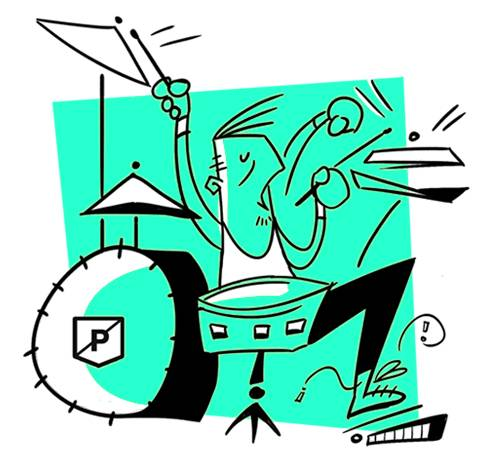

les 3 meilleursbatteurs du monde etleurs solosinoubliables
Ils font palpiter la musique et les coeurs de ceux qui l'écoutent.
Les batteurs, traditionnellement installés à l'arrière de la scène,
sont pourtant l'essence même de la musique : le rythme. Un tempo qui
peut se faire très speed, très puissant dans les genres musicaux que
nous avons choisi d'aborder aujourd'hui : le rock, le hard rock et
leurs enfants. Voici notre sélection des meilleurs batteurs de tous
les temps. La liste ne peut être exhaustive, et si vous considérez
qu'elle peut-être améliorée, n'hésitez pas à nous signaler vos héros
des baguettes !

john bonham
Un sacré bonhomme, ce Bonham. John Bonham, alias Bonzo, génie
enchaîné, déchaîné, à ses fûts, a fait les plus belles heures des
lives de "Led Zeppelin". Exemple, ce morceau de bravoure sur "Moby
Dick" au Royal Albert Hall en 1970. Sur cette performance purement
bluffante (mais juste à titre d’exemple !), il frappe même les
peaux à mains nues. Erigé au rang de "meilleur batteur de tous les
temps" par le lectorat de "Rolling Stone" en 1973, ce natif du
Worcestershire, mort à seulement 32 ans, reste une référence pour
tous les amateurs de (très) bonnes baguettes.